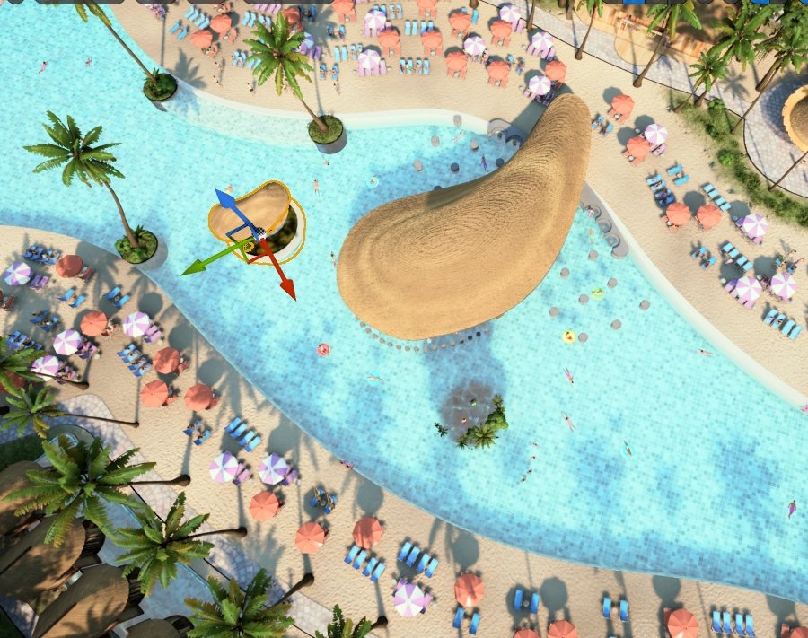

Perfect Day Mexico


The resort was not approved
VR is most powerful at human scale.
Four Seasons is the proof.
Project images: Agile Lens / Royal Caribbean · Rejection reported by Travel Weekly, May 20, 2026

The resort was not approved
VR is most powerful at human scale.
Four Seasons is the proof.
Project images: Agile Lens / Royal Caribbean · Rejection reported by Travel Weekly, May 20, 2026